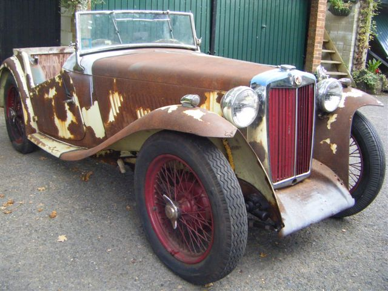

My MG - What have I bought?
As an owner of a classic MG I’m a newbie. It’s true that I owned an MGF for twelve years. Driving that, particularly with the hood down, helped keep me sane on my daily commute. However, it was not until I retired and sold the F that I bought the MG that I had wanted for 48 years; a TC. And a 1948 TC at that, the year in which both my wife and I were born. Clearly a good year!
Now most members of the West Sussex MG Owners Club have owned their MG for a lot longer, they’ve driven many more miles, done a lot more work on their car or cars and have many more stories to tell. However, I thought that if a new member wrote about their MG then other, more experienced members might be inclined to do the same, to the enjoyment and enlightenment of us all.
After owning TC4985 for six months now, my euphoria at finding and buying the car has transformed into an uneasy feeling in the pit of my stomach. Don’t get me wrong, I love the car. Driving it is so different to modern cars or even the cars of the 60s and 70s and the work that I’ve done on it so far has been challenging, but enjoyable. But having paid a silly amount of money for a 67 year-old car, I now know more about what previous owners have done to it, the work that still needs doing to it and the possible things that could go expensively wrong. Was my wife right when she described owning a TC as a time consuming and expensive hobby?
However, when I drive the car I forget all these worries. I wanted a car that I could drive and maintain, without any major repair or renovation, and had looked at three TCs before buying TC4985. One had been thoroughly restored, but was too expensive and looked ‘too shiny’ in a red that wasn’t quite an MG red. Perhaps this was because it had spent its life in the US and had been restored there. Another TC had bubbles under the paint, no seat runners and was again too expensive, while the third, described as ‘original’, was shabby beyond the point of embarrassment. I had seen TC4985 advertised on the Octagon Club web site, but the car was on the Essex coast, not a pleasant journey from here. However, eventually I spoke to the owner, got him to send me more photos and we made a day trip to Essex.
 I took this photo on the owner’s drive after I had agreed to buy the car. I had crawled over and under it and we had been for a short drive. Apart from maintaining 10 and 20 year old cars in the 70s and 80s, my experience was mainly theoretical, but I couldn’t see any cracks or distortions in the chassis and the engine sounded good, with no smoke coming out of the exhaust. At first I had thought of driving the TC home from Essex. After all, I had once driven a twenty year old MkI Spitfire from Essex to Cheshire. However, I decided to organise transport for the car, which was just as well, since I discovered that after a few miles the brakes would lock on! It became clear that the previous owner didn’t really drive the car much at all, being more interested in renovating and replacing parts of it.
I took this photo on the owner’s drive after I had agreed to buy the car. I had crawled over and under it and we had been for a short drive. Apart from maintaining 10 and 20 year old cars in the 70s and 80s, my experience was mainly theoretical, but I couldn’t see any cracks or distortions in the chassis and the engine sounded good, with no smoke coming out of the exhaust. At first I had thought of driving the TC home from Essex. After all, I had once driven a twenty year old MkI Spitfire from Essex to Cheshire. However, I decided to organise transport for the car, which was just as well, since I discovered that after a few miles the brakes would lock on! It became clear that the previous owner didn’t really drive the car much at all, being more interested in renovating and replacing parts of it.
TC4985 had originally been exported to the USA, but all I knew about its past was held within the sheaf of receipts for new parts that started in the UK in November 2010. Although there have only been two private owners since its return to the UK, with its first registration in August 2011, it has been through the hands of three dealers in Sussex, North Wales and Kent. Since buying the car, however, I’ve made contact with a past owner in Connecticut who bought a pile of bits from an abandoned project in the 1970s, initially painting the car green, but then changing it to cream (which according to the records was its original colour).
I’ve also discovered the dealer who imported the car to the UK in 2010, buying it from another dealer in New Jersey. As you can see from the second photo, it was in a sorry state on its return, having no seats or floor! There is still much of the car’s history that is a mystery to me. My contact in Connecticut kept no records apart from a few undated photos and can’t remember from whom he bought it or to whom he sold it. And the dealer in New Jersey seems to have upset some of his customers and quietly disappeared! I’ve tried the obvious sources of information, such as the T-Register, which initially led me to the ‘Registrar of the New England MG T Register’ and to my friend in Connecticut.
At the time of the last South Downs Run I had only owned TC4985 for two months and driven it no further than 20 miles in one go. So, lacking confidence, I decided to help steward instead. However, I’ve since been on a couple of ’Sussex Wanderers’ runs, doing over 50 miles in one day and have chalked up about 440 miles in the car since buying it. So I’m looking forward to the next SDR.
(Written 21st December 2015; published in WSMGOC Main Gear, January 2016.)
© David James 2020 Last updated: 9th April 2020